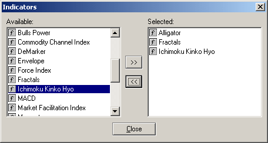

Индикаторы
Добавить индикаторы технического анализа
на график можно через окно "Навигатор", через окно управления индикаторами
(меню Insert -> Indicators, Ctrl+I) или из контекстного меню
-> окна графика, выбрав пункт Indicators. Окно управления индикаторами:

В группе Available
находятся все доступные в MetaTrader индикаторы, а в группе Selected - те, которые вы хотите видеть на графике. Для
помещения индикатора на график выделите его в группе Available и нажмите кнопку . Появится окно
настройки индикатора. Настройте его параметры (если это необходимо) и
нажмите кнопку ОК. Индикатор появится в группе
Selected. После закрытия окна управления
индикаторами он появится на графике. Для удаления индикатора с графика
выделите его в группе Selected и нажмите кнопку
.
Индикатор исчезнет из группы Selected.
Если используется один и тот же набор индикаторов, то можно
использовать шаблоны Template: задав на одном
графике набор, выберите в меню Charts или в
контекстном меню Template --> Save Template.
Для того, чтобы использовать сохраненный набор индикаторов на другом
графике, выберите Template --> Open Template.
После закрытия окна управления индикаторами он исчезнет и на графике.
Доступные в MetaTrader индикаторы:
- Accumulation/Distribution;
- ADX;
- Average True Range;
- Bollinger Bands;
- Commodity Channel Index;
- DeMarker;
- Elder-rays;
- Envelopes;
- Force Index;
- Ichimoku Kinko Hyo;
- MACD;
- Market Facilitation Index;
- Momentum;
- Money Flow Index;
- Moving Average;
- Moving Average of Oscillator;
- On Balance Volume;
- Parabolic SAR;
- Relative Strenght Index;
- Relative Vigor Index;
- Stochastic Oscillator;
- Williams' Percent Range;
- Williams' Alligator;
- Awesome Oscillator;
- Accelerator/Decelerator Oscillator;
- Fractals;
- Gator Oscillator.
Назад Содержание Далее
 |